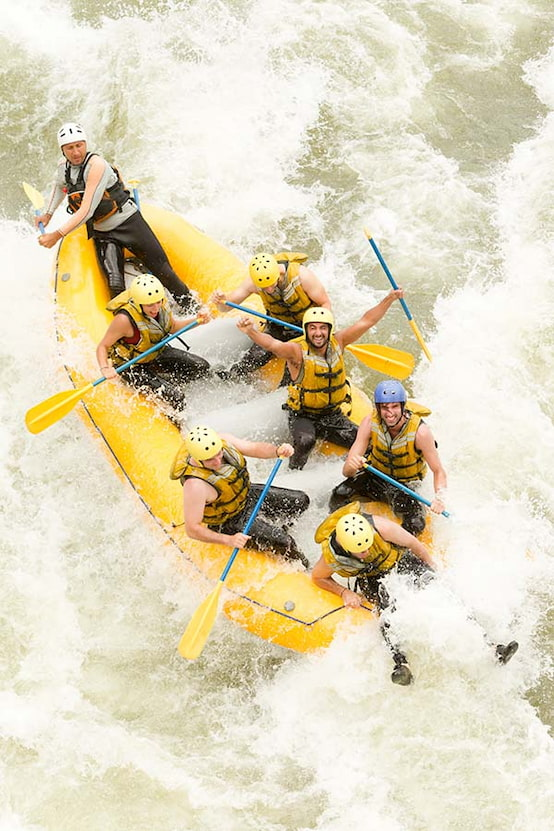

Our mission is to provide safe, exciting, and unforgettable rafting adventures while creating lifelong memories for families, friends, and adventure lovers. We believe every journey on the river should inspire courage, teamwork, and a love for nature.